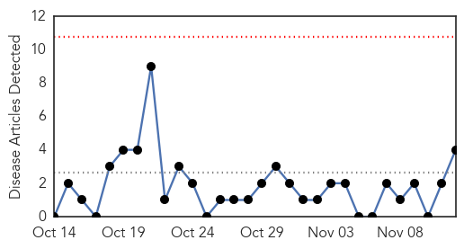

30 Day Trends
Web: 0 alerts, 0 warnings
Twitter: 0 alerts, 0 warnings
Top Articles:
- 0.942
- WHO warns that progress towards eliminating measles has stalled: 2015 targets will not be met
- 0.583
- UN calls for more efforts to prevent children's deaths from pneumonia
- 0.540
- Steep drop in pneumonia deaths in last decade, but more must be done to reach the most vulnerable children—UNICEF
- 0.520
- When to take your child to the doctor, and when to stay home.
Top Tweets:
-
No tweets found for Nov 12, 2014
Web/News Articles
Tweets